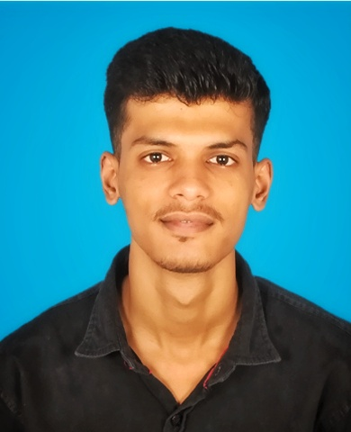
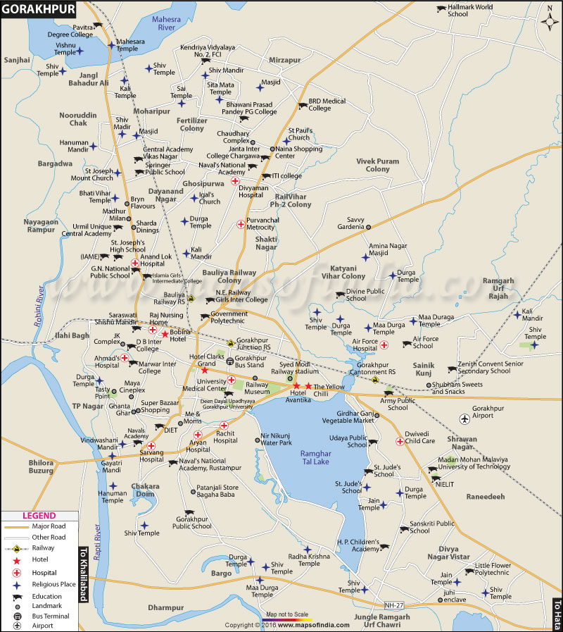
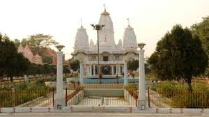
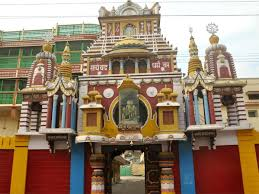
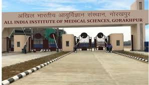

Open KIET Website
Open AKTU Website
Open MCA department of KIET Institute
Go to "About Myself"
Go to "About My City"
Go to "About my Motive"
Move to bottom of the page
"About Myself"
Move to top of the page

My name is Mayank Gaur and I was born on 23 August,2002 in Gorakhpur, Uttar
Pradesh .
My father's name is Mukesh Kumar Gaur and my mother's name is Shashi Gaur .
I completed my High School in the year of 2017 and Intermediate in the year of 2019 from Saraswati Vidya Mandir, Gorakhpur,
Uttar Pradesh
further I completed my graduation in B.sc Mathematics from Islamia College of Commerce,Gorakhpur, Uttar
Pradesh .
Now, I pursuing Master's of Computer Applications (M.C.A) from Krishna Institute of
Enginering and
Technology (KIET),Ghaziabad,Uttar Pradesh.
"About My City"
Move to top of the page

Gorakhpur is a city in the Indian state of Uttar Pradesh, along the banks of the Rapti
river in the Purvanchal region. It is situated 272 kilometers east of the state capital Lucknow.The name "Gorakhpur"
comes from the Sanskrit Gorakshapuram, which means abode of Gorakhnath,
a renowned ascetic who was a prominent saint of the Nath Sampradaya.
It is the administrative headquarters of Gorakhpur district, North
Eastern Railway Zone and Gorakhpur division.
The city also has an Indian Air Force station, since
1963. Gita Press, the world's largest publisher of Hindu religious texts like Ramayana and Mahabharat is also
located in Gorakhpur which was established here in 1926.
Gorakhpur has 4 universities, namely, Deen Dayal Upadhyay Gorakhpur University,
Madan Mohan Malaviya University of Technology, Maha Yogi Guru Gorakhnath Ayush University,
Mahayogi Gorakhnath University, a private university.One medical college named Baba Raghav Das
Medical College and AIIMS Gorakhpur and a sports college named Veer Bahadur Singh Sports College.
The state's first Hotel Management Institute has also been unveiled and would be known as State Institute of Hotel Management.
Also, a private engineering college, the Institute of Technology & Management, GIDA, Gorakhpur which is affiliated with
Dr. A.P.J. Abdul Kalam Technical University, Lucknow.
It also has a dental institute named as Purvanchal Institute Of Dental Science in gida, gorakhpur




About My Motive
Move to top of the page
Since, MCA is a postgraduate degree with a duration of two years, that
meant for me to go deeper into the area of computer application
development using modern programming languages. This master’s degree is the ideal option
for me to build an advanced technical base while working with the latest technological
advancements and take me to area of app development, systems designing, computer networks, system
administration, database administration,, data mining, etc.